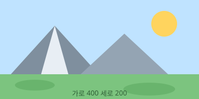

13단원 · Grid 와 반응형
이 파일은 고정된 px 대신 쓸 값들을 모아 놓은 곳입니다.
%, vw, max-width: 100%,
clamp(), object-fit 을 차례로 봅니다.
폭을 바꿔 가며 봐야 하므로 F12 → Ctrl+Shift+M 을 켜 두세요.
width: 50% 는 화면의 절반이 아닙니다.
부모 요소 안쪽 폭의 절반입니다. 이 차이가 나중에 큰 혼란을 만듭니다.
실제 결과 — 부모 안쪽 400px 안의 50% 와 25%
✏️ 직접 해보기 1 — .pct-parent 의 max-width 를
200px 으로 바꿔 보세요. 자식 둘의 폭이 각각 몇 px 이 될지
먼저 계산해 보고 나서 확인하세요. 확인했으면 400px 으로 되돌리세요.
vw 는 뷰포트 폭의 100분의 1,
vh 는 뷰포트 높이의 100분의 1 입니다.
부모가 무엇이든 상관하지 않습니다.
실제 결과 1 — 50vw, 25vw, 20vh
실제 결과 2 — 같은 "절반" 인데 기준이 다릅니다
vh 는 브라우저 창 높이를 기준으로 하므로
창 크기를 세로로 바꿔도 값이 달라집니다.
위 보라 상자의 180px 은 창 높이가 900px 일 때의 값입니다.
✏️ 직접 해보기 2 — .vw-half 를 width: 100vw; 로
바꾸고 저장한 뒤, 페이지 맨 아래를 보세요. 가로 스크롤 막대가 생깁니다.
왜 화면 폭인데도 넘치는지 위 설명에서 찾아 읽고, 확인했으면 50vw 로 되돌리세요.
이미지는 원래 크기대로 그려집니다. 부모보다 커도 봐주지 않습니다. 반응형에서 가로 스크롤이 생기는 원인 대부분이 사진입니다.
실제 결과 — 위는 그냥 넣은 것, 아래는 max-width: 100%

위쪽 액자만 .spill-frame 이라는 껍데기로 한 번 더 감싸고
overflow-x: auto 를 걸어 두었습니다(10단원).
그렇게 하지 않으면 창을 폭 480px 쯤까지 좁혔을 때
이 자료 페이지 전체에 가로 스크롤이 생기기 때문입니다.
여러분이 만드는 페이지에서 이 일이 벌어지면 감싸서 가리지 말고
아래처럼 사진 자체를 고치세요.
새 프로젝트를 시작할 때 CSS 맨 위에
img { max-width: 100%; } 한 줄을 미리 넣어 두는 사람이 많습니다.
사진 때문에 화면이 깨지는 일을 통째로 막아 주기 때문입니다.
✏️ 직접 해보기 3 — .photo-good 에 height: 240px; 를
한 줄 더 넣어 보세요. 그림이 어떻게 되는지 확인하고 지우세요.
"높이를 건드리면 안 된다" 를 눈으로 확인하는 것이 목적입니다.
값을 하나만 쓰는 대신 여러 값 중에서 고르게 할 수 있습니다. 이름은 무섭지만 하는 일은 아주 단순합니다.
실제 결과 — 폭을 바꿔 가며 보세요
font-size: clamp(16px, 2.5vw, 28px)
✏️ 직접 해보기 4 — 기기 툴바로 폭을 1280 → 768 → 480 으로
바꾸면서 네 줄이 각각 어떻게 변하는지 보세요.
그다음 .fn-clamp 의 최댓값 380px 을
600px 으로 바꾸면 폭 1280 에서 몇 px 이 될지 계산하고 확인하세요.
크기가 제각각인 사진들을 같은 크기 액자에 예쁘게 넣는 방법입니다. 카드 목록을 만들 때 반드시 필요합니다.
실제 결과 — 왼쪽부터 fill(기본), cover, contain
object-fit 은 액자 크기가 정해져 있을 때만 뜻이 있습니다.
width 와 height 를 둘 다 정하지 않으면 맞출 액자가 없어서
아무 일도 안 일어납니다.
✏️ 직접 해보기 5 — .thumb 의 height 를
120px 으로 바꿔 보세요. 세 액자가 가로로 납작해집니다.
그 상태에서 cover 와 contain 이 어떻게 달라지는지 다시 비교해 보세요.
여기 실수들은 대부분 넓은 화면에서는 안 보입니다. 폭을 좁혀 봐야 드러납니다. 그래서 기기 툴바를 켜 놓는 습관이 중요합니다.
무슨 일이 일어나나요: 페이지 아래에
가로 스크롤 막대가 생깁니다. 좌우로 흔들리는 페이지가 됩니다.
그 상자가 화면 맨 왼쪽에서 시작하지 않는데 화면 전체 폭을 차지하기 때문이고,
세로 스크롤 막대가 있으면 그 폭(약 15px)까지 더해지기 때문입니다.
가로로 꽉 채우고 싶으면 폭을 아예 안 정하거나
width: 100% 를 쓰세요.
무슨 일이 일어나나요: PC 에서는 멀쩡한데
휴대폰에서 열면 사진 한 장 때문에 페이지 전체가 옆으로 밀립니다.
요즘 사진은 가로가 3000px 이 넘습니다. 폭 360px 화면에서 그대로 그려집니다.
img { max-width: 100%; } 한 줄로 막습니다.
무슨 일이 일어나나요: 창을 좁힐수록
사진이 가로로만 눌려서 찌그러집니다. 가로는 따라 줄어드는데
세로는 180px 에 묶여 있기 때문입니다.
비율을 지키려면 height 를 아예 안 쓰거나
object-fit: cover 를 같이 쓰세요.
무슨 일이 일어나나요: 생각보다 훨씬 작게 나옵니다.
% 는 부모 기준이라, 부모가 이미 400px 이면
50% 는 200px 입니다. 화면이 1280px 이어도 640px 이 되지 않습니다.
진짜로 화면 기준이 필요하면 vw 를 씁니다.
무슨 일이 일어나나요: 높이가 안 바뀝니다.
부모의 높이가 정해져 있지 않으면 "그 100%" 를 계산할 수가 없어서
브라우저가 이 줄을 무시합니다. 폭은 저절로 정해지지만 높이는 아닙니다.
화면 높이를 채우고 싶다면 height: 100vh 를 쓰세요.
무슨 일이 일어나나요: 글자가 항상 28px 로만 나옵니다. 최소가 28px 이고 최대가 16px 이라 말이 안 되는 조건이 되어, 브라우저가 최솟값을 그대로 씁니다. 순서는 최소, 기준, 최대 입니다. "적어도 이만큼, 보통은 이만큼, 많아야 이만큼" 으로 읽으세요.
── 정리 ──
1. % 는 부모 기준,
vw/vh 는 화면 기준입니다.
2. 100vw 는 거의 항상 가로 스크롤을 만듭니다. 100% 를 쓰세요.
3. 사진에는 max-width: 100% 를 겁니다.
height 는 건드리지 않아야 비율이 유지됩니다.
4. min() 은 작은 쪽, max() 는 큰 쪽을 고릅니다. "최소/최대" 가 아닙니다.
5. clamp(최소, 기준, 최대) 는 미디어쿼리 여러 개를 한 줄로 대신합니다.
6. object-fit: cover 는 액자를 꽉 채우고 자릅니다. 썸네일의 기본입니다.
7. 폭은 되도록 정하지 말고, 정해야 하면 상한선(max-width) 만 정하세요.